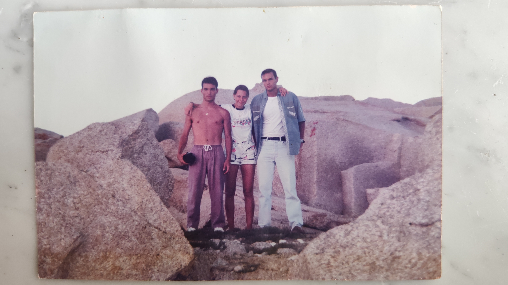
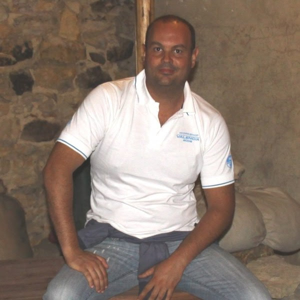
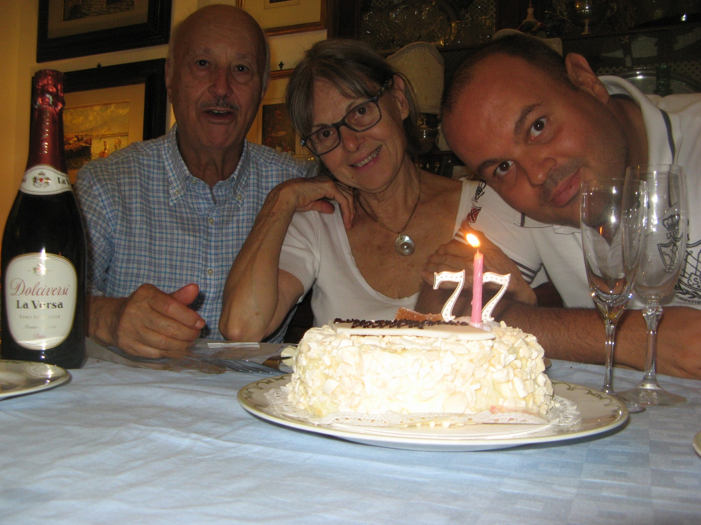

Federico Di Marco - My personal pages (fededim.github.io)
Various Pictures
My father student record book at University of Pisa
My paternal grandfather Francesco who lived till the age of almost 103
A picture of my mother when she was 82
A picture of me when I was at a catholic elementary school (1986).
Curiosity: my teacher Suor Letizia, a nun, became famous on newspapers in 1981 for saving the Pope Giovanni Paolo II from the attacker Ali Agca.
Curiosity: my teacher Suor Letizia, a nun, became famous on newspapers in 1981 for saving the Pope Giovanni Paolo II from the attacker Ali Agca.
A picture of me at home when I was teenager (1994)
A picture of my family at Pozzuoli solfatara (80s)
A picture of me in an holiday in Sardinia (1995)

A picture of my father and mother at Duomo in Milan (90s)
A picture at Gator Park - Florida (2009)
A picture of me while I was in New York (2009)
A picture of me at CN Tower in Toronto - middle level (2009)
A picture of me at CN Tower in Toronto - top level (2009)
A picture of me in Prague underground (2011)

A picture of me on my bike at Stelvio Pass (2011)
A picture of me at the top of Stelvio Pass (2011)
A picture of me at Serravalle outlet (2013)
A picture of my family at the only dinner out on Christmas eve in a restaurant at Chiavari, a smaller city near Genova (2006)
It was taken with my first digital camera, a Canon Powershot A640 (though here it is scanned due to a subsequent major disaster with my external hard drive, experimenting with hard disk encryption can be deadly the first times :-)
It was taken with my first digital camera, a Canon Powershot A640 (though here it is scanned due to a subsequent major disaster with my external hard drive, experimenting with hard disk encryption can be deadly the first times :-)
A picture of my family at lunch in our house (2007)
The guest on the extreme right, Franco Reggio from Strevi - Piedmont was another executive from Italsider the biggest italian steel company who has worked extensively with my father and who also attended ESCS meetings in Brussels. In 2023 on my homecity local newspaper Secolo XIX there was a news about the death of Giovanni Gambardella from Apulia, a manager who reorganized the steel company in the late eighties after it was named back to Ilva (Ilva was the original name which mean in latin Elba Island, an island in Tuscany mostly known for its sea tourism, but it had also a lot of iron ore deposit used to fuel the blast furnaces of the steel company); what is odd is that he looks quite similar to my father friend, here it is a double picture of them for comparison, however either Franco Reggio or my father never spoke of him at our weekly lunch on sundays.
The guest on the extreme right, Franco Reggio from Strevi - Piedmont was another executive from Italsider the biggest italian steel company who has worked extensively with my father and who also attended ESCS meetings in Brussels. In 2023 on my homecity local newspaper Secolo XIX there was a news about the death of Giovanni Gambardella from Apulia, a manager who reorganized the steel company in the late eighties after it was named back to Ilva (Ilva was the original name which mean in latin Elba Island, an island in Tuscany mostly known for its sea tourism, but it had also a lot of iron ore deposit used to fuel the blast furnaces of the steel company); what is odd is that he looks quite similar to my father friend, here it is a double picture of them for comparison, however either Franco Reggio or my father never spoke of him at our weekly lunch on sundays.
{kind=link}
A picture of my family at my fathers 73th birthday (2010)

Some picture of my family villa in Campo Di Giove, Abruzzi built my grandfather Francesco (2013)


A picture of the 77th birthday of my mother (2013)

A picture of me when I made my first (and only) flight as a pilot (around 2015). The plane was a Tecnam P92.
Another picture of me of my first flight as a pilot
A picture of me at Orsay's musem in Paris (2018)
A picture of me at Focault's pendulum in Paris Pantheon (2018)
A picture of me when I grew a "long" beard for a period of my life (2020)
A picture of me after having relocated near Switzerland (2023)
A picture of me in Bali (2024)

A picture of me in Koh Samui with iguanas (2025)